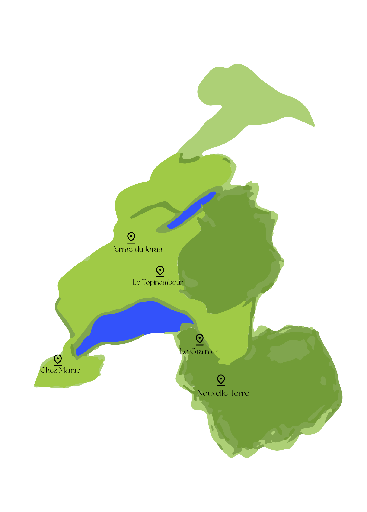

SEMENCE DE PAYS développe une production de semences reproductibles, rustiques et adaptées à une agriculture biologique proche des cycles de la nature, en collaboration avec les initiatives nourricières de proximité.
Nos semences Nos semences
Nos semences Nos semences
Découvrez nos trésors de biodiversité sur le shop!
Découvrez nos trésors de biodiversité sur le shop!

Chez Mamie :
Rue des Rois 17
1204 Genève
Le Topinambour :
Avenue William-Fraisse 9
1006 Lausanne
Ferme du Joran :
Chemin des Philosophes 15
1350 Orbe
Le Grainier :
Route des Mines de Sel
1880 Bex
Nouvelle Terre :
Rue du Grand-Verger 12
1920 Martigny